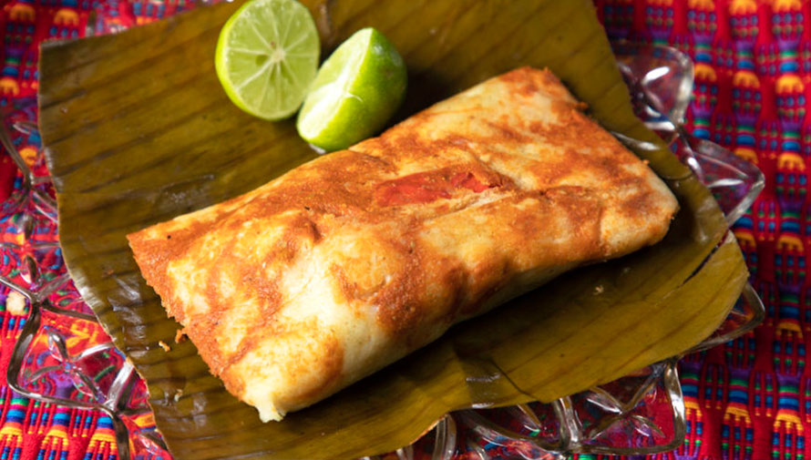

Tamal

- Corn flour
- Sauce
- Chunk of pork meat
- Banana plant leaf
- Add water to the corn flour until it's workable
- Make a large ball of corn flour
- Insert the chunk of pork meat in the center of the ball
- Add sauce, liberally
- Wrap it in the banana leaf and tie it tightly
- Put all the tamales inside a big pot with water and cook for a really long time
Home